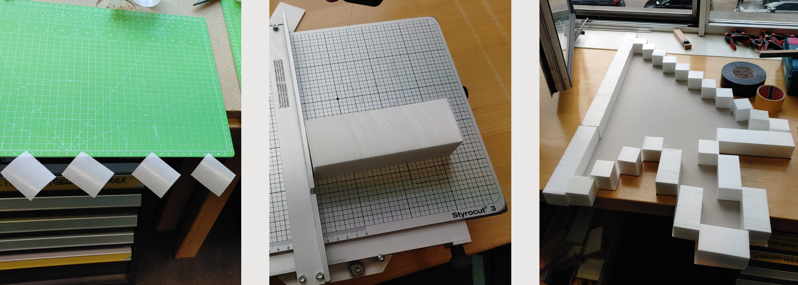

Cursor
Unusual Relations
Process
For our final task, we had the freedom to choose any interaction we wanted, as long as it
was unusual. We found Daniel's
suggestion of using a laptop with movement and balance intriguing, and we decided to
explore that direction. We wanted
to take something familiar and common in our everyday lives and transform it into an
unusual interaction. That's when we
thought of the mouse.
To make the typical mouse interaction unusual, we drew inspiration from the concept of
Chindogu, which involves creating
impractical, yet thought-provoking inventions. We decided to design a large artifact that
would move the cursor on the
screen by tilting it, adding complexity and unpredictability to the interaction.
Narattive: In the distant future, where AI reigns and humans are plagued by a sense
of idleness, the AI recognizes the urgent need
to revive human engagement and creativity. Searching through the annals of history for
inspiration, the AI stumbles upon
an intriguing solution.
It decides to create a completely novel form of interaction to reignite the spark within
humanity. The solution it finds is the creation of an extraordinary artifact—an enormous
cursor that defies convention. This
cursor, unlike any before it, requires the collaborative effort of a select few
individuals to operate. The AI
understands that without group involvement, humans will be unable to utilize this colossal
cursor and, consequently,
access the digital realm.
Implementation
For our unconventional interaction, we opted to use a 6-Axis Accelerometer & Gyroscope sensor. I was familiar with this sensor, I knew there could be potential challenges. But we didn't have another sensor available on-site to accurately measure tilt. Leveraging Henning's experience with microPython, our initial plan involved using an ESP32 and connecting the gyroscope via a serial interface with microPython to transmit mouse signals directly to the computer. However, the implementation proved to be quite difficult, and we encountered several roadblocks, leading to the failure of this plan.
We turned to the internet in search of alternative solutions. We came across the idea of
cursor control via a serial
path using an Arduino mouse control library. However, we hit another obstacle—our ESP
model was not compatible with the
Arduino library. Eventually, Marc discovered a successful approach recommended by Konrad
and Kiel. We utilized a node
server and the JavaScript library robot.js to establish a wireless connection. The raw
data from the gyroscope sensor
was transmitted via W-LAN to a computer running the node server. We then mapped this data
to mouse movement, enabling us
to control the cursor based on the sensor's readings.
 However, interpreting the sensor
data presented its own
significant challenge. The gyroscope provided acceleration data instead of direct degrees
of tilt, requiring us to apply
complex mathematical formulas to interpret the data as tilt or coordinates.
However, interpreting the sensor
data presented its own
significant challenge. The gyroscope provided acceleration data instead of direct degrees
of tilt, requiring us to apply
complex mathematical formulas to interpret the data as tilt or coordinates.
In addition to the technical considerations, we also needed a physical artifact for interaction. We quickly agreed on the visual concept of a large, pixelated cursor resembling an old-fashioned arrow. To bring this idea to life, we utilized the largest hard cardboard available and used a laser cutter to cut out the desired cursor shape. Styrofoam was then used to secure and reinforce the structure.  While initially planning for a single large button in the middle of the cursor, we realized during the prototyping phase that it would disrupt the cursor's visual aesthetics. As a result, we opted for an interactive cursor tip covered of foil and incorporated a touch sensor, allowing users to touch and click the cursor tip to initiate actions.
Outcomes
After completing the construction and conducting tests on our artifact, we were thrilled
to discover that we had created
an incredibly captivating and enjoyable interaction. Observing individuals using the giant
cursor gave the impression of
being a surfer, skillfully riding the waves of the web.
potential extensions to further enhance the interaction: One intriguing idea was to
incorporate a light element, such as
a Light Stripe, to provide visual feedback when the user clicks or interacts with elements
on the screen.
It would be intriguing to explore the dynamics of controlling an even larger and heavier
cursor, reaching a point where
it becomes impossible for a single person to operate it alone. In such a scenario, it
raises questions about how users
could collaboratively control the cursor, how they would communicate with each other, and
how efficiently they would
work together to achieve their shared goal.